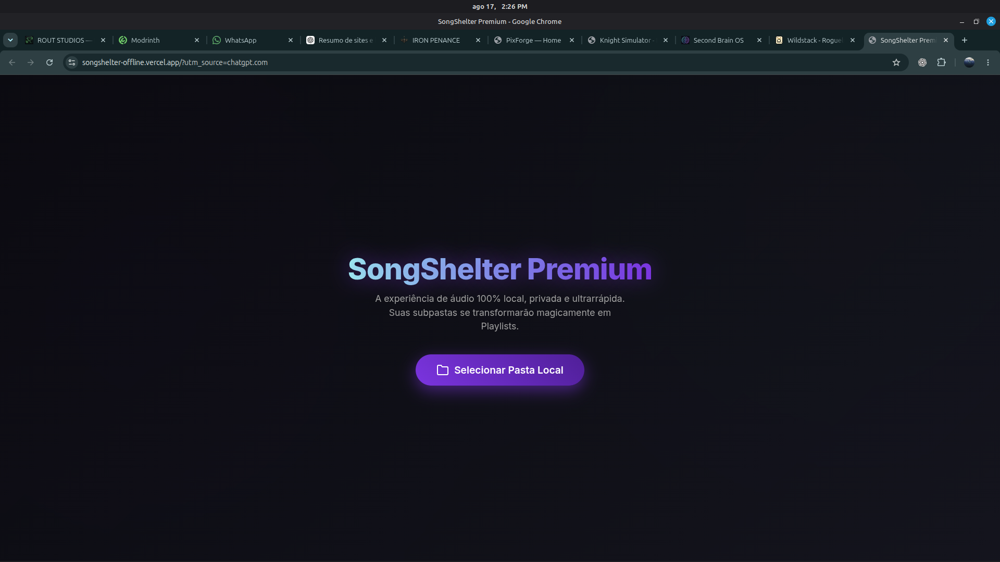

OPEN LIVE ↗01 / 07
MEDIA PLATFORM
SongShelter
Player de música e plataforma de vídeos
Um player 100% gratuito, local e sem anúncios, criado para uma experiência limpa e direta. Também funciona como uma plataforma aberta para compartilhamento de vídeos.
- reprodução local
- zero anúncios
- gratuito
- vídeos